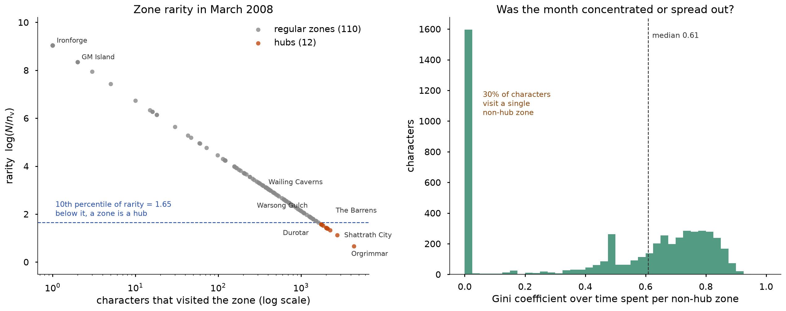

Part 4 · Location features, and whether they earn their place
1 Where characters spend their time
The previous section on sessionization modeled when a character is online, and their general time-specific behavior. This section focuses on answering where a character spends their time, as character location should be a signal of whether they are a dedicated player (focusing on late-game areas), or someone less committed to the game.
While generating these features originally appeared to be a promising direction, experimental results seem to show little to no impact on the actual prediction performance (see Does the block earn its place?). We keep the investigation for historical reasons, and to showcase a different application of the SessionEncoder.
1.1 Sessionizing over character and zone
To generate the features, we use again the SessionEncoder, split on (char, zone) instead of char:
session_encoder_zone = SessionEncoder(
split_by=["char", "zone"],
timestamp_col="timestamp",
session_gap=session_gap * 60,
suffix="session_id_zone",
)A “zone session” is the interval between the first heartbeat in a zone, to the last one before they are seen somewhere else: this is a visit, not a play session. The two session IDs are independent and touch different columns, and a character’s sessions do not change whether or not the location features are enabled: this means that use_location can be a plain choose_bool.
Visits are much shorter than play sessions, because players move around inside a session. In March 2008, we measure ~385k zone sessions for 109k play sessions, and 49% of the visits consist of a single heartbeat.
This is a sample of Character 66560’s session data for March 2008, where the 10 hours cover 30 visits over 6 zones:
| zone | visits | time in zone | rarity | hub? |
|---|---|---|---|---|
| Wailing Caverns | 2 | 1h 09m 59s | 3.19 | no |
| Warsong Gulch | 5 | 30m 00s | 1.87 | no |
| Stranglethorn Vale | 1 | 20m 10s | 1.91 | no |
| The Barrens | 9 | 10m 05s | 1.43 | yes |
| Thunder Bluff | 1 | 10m 01s | 1.71 | no |
| Orgrimmar | 12 | 1m 00s | 0.66 | yes |
To note that since this is periodic polling of the data, session durations have some caveats. Given that a visit is measured from the first to the last hearbeat in a given zone, the ten minutes between one zone and another belong to neither. Additionally, a player may move between multiple zones between two polls and that would not be detected by the dataset.
1.2 Rarity: how special is a zone
The first thing worth knowing about a zone is how many people go there. Rarity is \(r_v = \log(N / n_v)\), where \(N\) is the number of characters in the month and \(n_v\) the number that visited the zone:
rarity=(n_unique_characters / pl.col("unique_visitors")).log()In March 2008 there are ~8,4k characters across 122 zones, and the scale runs from Orgrimmar at 0.66 (the Horde capital, and the single busiest place in the data) to 9.04 for the zones with exactly one visitor.
High rarity means “almost nobody comes here”, and at the top of the scale it usually means a recording glitch rather than a discovery. Rarity measures the data, not the world, and the rarest observations are the ones most worth distrusting.
The bottom decile of that scale marks the hubs: any zone with rarity below the 10th percentile — 1.65 in this month — is a place where everyone goes. That is 12 of the 122 zones, and they are the capitals plus the level 60–70 questing corridors:
| zone | visitors | rarity | avg. level there |
|---|---|---|---|
| Orgrimmar | 4,370 | 0.66 | 60.1 |
| Shattrath City | 2,748 | 1.12 | 69.6 |
| Undercity | 2,245 | 1.32 | 45.3 |
| Terokkar Forest | 2,088 | 1.40 | 68.6 |
| Hellfire Peninsula | 2,058 | 1.41 | 64.5 |
| Durotar | 2,049 | 1.41 | 23.7 |
| Zangarmarsh | 2,027 | 1.43 | 66.8 |
| The Barrens | 2,012 | 1.43 | 28.9 |
Note that a hub is not a “max-level zone”: Durotar and the Barrens are starting areas with average levels under 30, so they are hubs only because they are crowded. The list of “hubs” mixes two reasons why a zone is busy: either, hubs are where players trade, or it’s where they spend time at level cap. For this reason, the time spent in hubs is a weaker signal on its own than the time spent out of them.
1.3 Per-character aggregates
add_player_rarity reduces a character’s visits to six numbers:
df.lazy().select(
pl.col("char"),
rarity.max().over("char").alias("max_rarity"),
rarity.mean().over("char").alias("mean_rarity"),
(is_hub.sum().over("char") / is_hub.count().over("char")).alias("in_hub"),
zone_level.max().over("char").alias("max_zone_level"),
zone_level.mean().over("char").alias("mean_zone_level"),
(zone_level.ge(60).sum().over("char") / zone_level.count().over("char")).alias(
"frac_endgame"
),
).unique("char")For character 66560 in March:
| feature | value | reads as |
|---|---|---|
max_rarity |
3.19 | the rarest place they went was Wailing Caverns |
mean_rarity |
1.55 | on average, a fairly ordinary zone |
in_hub |
0.63 | 63% of their visits were to a hub |
max_zone_level |
68.5 | the highest-level content they touched was near cap |
mean_zone_level |
47.1 | on average, mid-level content |
frac_endgame |
0.46 | 46% of their visits were to zones averaging level 60+ |
max_rarity is the one that carries level information: a character whose rarest visit is a level-70 raid has clearly progressed further than one who never left the starting zones. in_hub is meant to capture the opposite — how much of the month was spent idling in a capital rather than out in the world. in_hub, *_zone_level and frac_endgame measure the content a player is doing, rather than their progress.
The aggregates are taken with .over("char") on the heartbeat table, not on the visit table, so each number is a mean over heartbeats. Since polls arrive every ten minutes, that is very nearly a time average, but not exactly: a visit is truncated at its last heartbeat, so a two-heartbeat visit contributes two rows to a two-hour one’s twelve. For character 66560 the three possible weightings give heartbeats 0.63, visits 0.70, minutes 0.60 — the same story with a different resolution. mean_rarity moves with it, from 1.55 over heartbeats to 1.66 over minutes, because the long visit (Wailing Caverns, 1h 30m, rarity 3.19) gets more weight than its eleven heartbeats suggest.
1.4 Gini: concentrated or spread out
The last block answers a different question: not where, but how evenly. The Gini coefficient over the time a character spent in each zone is 0 when the time is split perfectly equally and approaches 1 when all of it is in one place. Low values describe an explorer moving between many zones; high values describe a character parked in one spot, grinding.
gini = (n + 1 - 2 * pl.col("cumulative").sum() / pl.col("cumulative").last()) / nTwo details matter for reading the number. First, hub zones are dropped before the coefficient is computed (get_location_gini(..., with_hub=False)), on the grounds that everyone passes through a capital and it says nothing about play style — so a character who only ever sat in Orgrimmar is not “infinitely concentrated”, they are simply not measured. Second, the coefficient is computed per character over the whole month, not per play session, so it describes the month’s geography rather than any single evening.
Measured on March 2008 over the 5,251 characters that get a coefficient, the distribution is bimodal: the median is 0.61, the upper quartile 0.75, and 30% sit exactly at 0 — of whom all but 72 visited a single non-hub zone in the entire month, which makes the coefficient degenerate rather than informative. A further 3,178 characters (37.7% of the month) never left a hub zone at all and get no coefficient, so the left join leaves gini null for them. Between the two, only 62% of the month’s characters have a Gini value that means anything.
This column is no longer used. It is still in the code, but make_data_op now passes add_gini=False. The reason is that the coefficient is mostly a proxy for how many zones a character visited: it is bounded above by \((n-1)/n\), so it rises mechanically with \(n\), and the correlation between the two is 0.73. Within zone-count strata it is at chance — for characters who visited exactly two non-hub zones the AUC against churn is 0.487, for three it is 0.494 — and it adds nothing to a model that already knows the zone count. It also cost 1.50 s of the 1.65 s location block, because the coefficient has to run through map_groups, one Python call per character, which is where polars stops being able to vectorise.
1.5 The whole picture

On the left, every zone in March 2008 by visitors (log scale) and rarity, with the hub threshold drawn in: the relationship is a clean straight line because rarity is a function of the visitor count, and the hubs are simply the right end of it. On the right, the distribution of per-character Gini, with the spike at 0 standing for the characters who stayed in one non-hub zone all month.
1.6 Does the block earn its place?
Not measurably. Evaluated with the pipeline’s own Splitter — an expanding window that trains on every month up to split_point − 1 and tests at split_point + 1, with the gap month dropped because its target needs the test month’s data — the block is indistinguishable from noise. Over the eleven 2008 splits, averaged across three 10% character samples:
| location features | mean ΔAUC | wins |
|---|---|---|
gini alone |
−0.0003 | 17/33 |
| the three rarity columns alone | +0.0006 | 17/33 |
rarity + gini |
−0.0004 | 16/33 |
| rarity + zone level (six columns, as shipped now) | −0.0001 | 19/33 |
rarity + zone level + gini |
+0.0004 | 18/33 |
Every variant lands within ±0.001 of the same model without the block, and every variant wins roughly half its splits. The per-split spread is an order of magnitude larger than the mean: individual splits move by up to ±0.010 in either direction. That is the honest reading — the location block neither helps nor hurts, and the earlier claim that it was a consistent +0.0085 gain does not survive a faithful re-run.
The Gini row is the direct answer to whether it should stay: on its own it is indistinguishable from noise, and adding it to the six-column block does not change that. It is not that the coefficient is useless in principle — it is that whatever it measures is already covered by the zone count and the zone-level columns, and the extra column only gives the model another noisy axis to split on.
This block is also by far the most expensive part of the feature table, which is why it is a choice at all. On March 2008 (8,429 characters, 1.22M heartbeats), the general feature functions (sessions, monthly player aggregates, class aggregates) take about 0.2 s, while the zone pass takes 0.21 s to encode and 0.16 s to turn into features. Dropping the Gini is what makes it cheap: with add_gini=True the same step takes 1.65 s instead of 0.16 s, a tenfold difference.
use_location = skrub.choose_bool(name="location_features")The next part assembles everything built so far into a single skrub Data Op and runs it.